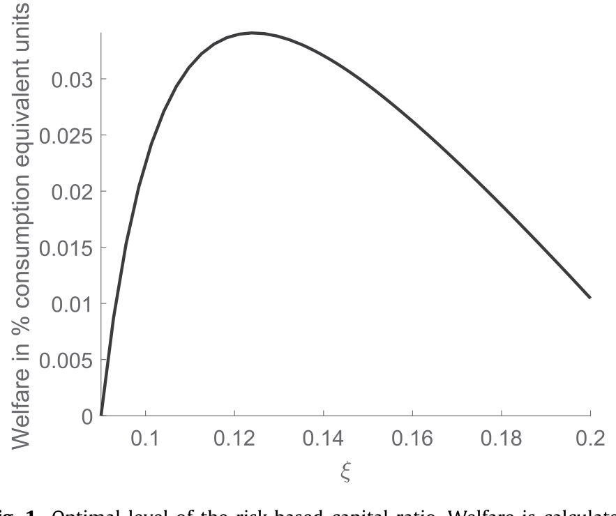
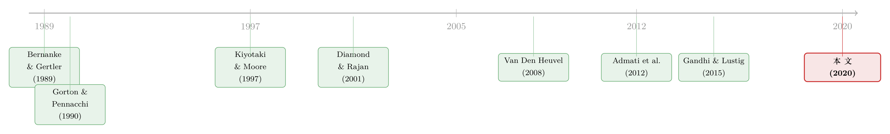

多发股本，银行就一定少放贷吗？——一个被「存款利率」掰回来的常识
本文读的是 Begenau (2020, Journal of Financial Economics)：作者搭了一个带银行的动态一般均衡模型，把「提高资本要求」这件事的成本与收益同时装进去。结论有点反常识——在合理参数下，把美国银行的资本要求从校准的 9% 提到 12.4%，不但没有掐死信贷，反而让银行贷款增加 2.35%、消费上升 33 个基点、消费波动率下降 18%。机制的钥匙，藏在「存款利率会内生地往下走」这一步里。
1 一句被反复念叨的「常识」
先听一句话。2009 年 11 月，德意志银行时任 CEO Josef Ackermann 说：「更多的股本……会限制银行向实体经济放贷的能力。这会拖慢增长，对所有人都不利。」
这句话几乎是整个银行业反对提高资本要求时的标准说辞，而且听上去无懈可击：股本比存款贵，逼银行多用股本、少用存款，融资成本自然上去，能放的贷款自然下来。监管收紧 → 信贷收缩 → 产出下降，一条直线，干净利落。学术界里也有大量实证证据支持它——比如 Peek and Rosengren (1995) 利用只影响一部分银行的资本冲击，识别出资本要求提高确实压低了这些银行的放贷。
但这里有个被人忽略的前提。Begenau 一针见血地指出：所有这些实证证据，本质上识别的都是「局部均衡」的反应。它们靠的恰恰是「只动一部分银行、不动整个市场利率」这种设计——因为只有这样，才能把贷款的变化归因于资本要求，而不是利率或贷款需求的变化。换句话说，这些研究在估计弹性时，默认存款利率不会因为监管而变。
于是一个自然的问题冒出来了：如果监管是全行业一刀切，存款利率本身会动呢？
2 一个思想实验，和它的「修正版」
为了把张力讲清楚，作者先复述了支撑「常识」的那个思想实验。
设想一家最简单的银行，两种资金来源：股本和存款，存款更便宜。银行会在资本要求允许的范围内尽量多用存款，融资的边际成本是股本成本与存款成本的加权平均（权重由资本要求决定）。现在监管把股本/风险加权资产的比例往上提，其他一切不变，尤其是存款利率不变。那么权重就从便宜的存款挪向了昂贵的股本，加权融资成本上升，贷款下降；贷款少了，银行发的存款也少了。供给双双萎缩。这就是常识的来处。
接着，是真正关键的一步——作者把这个实验改了一个字：让存款利率内生地响应存款供给。
假设家庭像在本文模型里那样，从持有银行存款本身获得效用（流动性、安全性带来的「便利收益」(convenience yield)）。这会带来两个后果。第一，存款确实是比股本便宜的资金，因为家庭愿意为了便利收益而少收一点利息。第二，也是最要命的一点：便利收益是随存款数量递减的——存款越多越不稀罕，家庭越不愿为它让利。
于是反转出现了。当资本要求提高、迫使存款供给收缩时，存款变稀缺了，它的便利收益上升，家庭愿意以更低的利率继续持有它。银行的存款利率因此下降。
那到底哪股力量赢？是「股本权重上升」推高的融资成本，还是「存款变稀缺」压低的存款利率？这不再是一道逻辑题，而是一道定量题——必须放进一般均衡里去算。一旦存款利率渠道占了上风，银行的资本成本反而下降，最优放贷水平不降反升。
这正是为什么作者坚持要用一般均衡框架：常识之所以是常识，是因为它偷偷把「存款利率」摁住了。一旦松开这只手，符号就可能翻过来。这条「越收紧、越稀缺、越便宜」的逻辑，和近年关于安全资产需求压低收益率的讨论一脉相承（关于「安全资产是被供给出来的」这层意思，可参见《无风险国债是「制造」出来的：被保护的是谁，被牺牲的又是谁》）。
3 模型：三件让银行「重要」的事
要把上面的直觉算成数字，作者建了一个离散时间、无限期的一般均衡模型，里面有总量冲击、一个代表性家庭、两个生产部门：不依赖银行的部门 (sector f) 和 依赖银行的部门 (sector B)。两个部门生产同一种消费品，但 B 部门由代表性银行部门拥有并经营。
银行之所以「重要」，靠的是三件事：
- 第一，一部分生产离不开银行融资（B 部门的资本由银行持有）。
- 第二，银行发行无风险存款，家庭把它当作安全、流动的资产来珍视——作者直接把存款写进家庭效用函数，效用对存款递增。
- 第三，政府对银行的补贴制造了过度冒险的激励——以一个约化式 (reduced-form) 的转移函数来刻画，这个函数随规模、杠杆和亏损递增。
3.1 两个生产部门
不依赖银行的部门是竞争性的，用 Cobb–Douglas 技术生产：
$$y_t^f = Z_t^f \left(k_{t-1}^f\right)^{\alpha}\left(H_t^f\right)^{1-\alpha}$$
其全要素生产率服从对数 AR(1)：
$$\log Z_t^f = \rho_f \log Z_{t-1}^f + \sigma_f\, \varepsilon_t^f$$
依赖银行的部门则是这篇论文的精髓所在。它是规模报酬递减的，更重要的是，银行可以选择监督 (monitoring) 的份额 \(m_{t-1}^B\)。被监督的那部分生产用「好」的生产率 \(Z_t^{B,\text{good}}\)，没被监督的用「坏」的 \(Z_t^{B,\text{bad}}\)：
$$y_t^B = \left[\, m_{t-1}^B Z_t^{B,\text{good}} + \left(1-m_{t-1}^B\right) Z_t^{B,\text{bad}} \,\right]\left(k_{t-1}^B\right)^{v},\qquad v<1$$
作者假设 \(\mu_{B,\text{good}} > \mu_{B,\text{bad}}\) 且 \(\sigma_{B,\text{good}} < \sigma_{B,\text{bad}}\)——也就是说，监督既抬高平均回报、又压低对总量冲击的暴露。监督是有成本的，成本是凸的：
$$G\!\left(m_t^B\right) = \frac{\varphi}{2}\left(m_t^B\right)^2$$
这一步设计极其聪明：监督份额 \(m_t^B\) 同时就是银行的风险选择——少监督一点，平均回报低一点，但对下一期共同冲击的暴露就大一点。风险与监督，被绑在了同一个变量上。
3.2 银行的资产负债表与那笔「补贴」
银行用风险资产 \(k_{t-1}^B\) 和无风险政府债 \(b_{t-1}\) 对应存款 \(s_{t-1}\) 与股本 \(e_{t-1}\)：
$$k_{t-1}^B + b_{t-1} = s_{t-1} + e_{t-1}$$
利润是生产收入扣折旧、加政府债利息、减存款利息：
$$\pi_t = y_t^B - \delta_B k_{t-1}^B + r_t^{\text{gov}} b_{t-1} - r_{t-1} s_{t-1}$$
银行受到 Basel-III 式的资本要求约束——安全资产风险权重为 0，所以约束写成：
$$e_t \ge \xi\, k_t^B$$
这里的 \(\xi\) 就是政策变量：资本要求。
Modigliani–Miller 在这里不成立，原因正是前面那两件事：家庭为存款付便利收益（让存款变便宜），政府给银行补贴（让杠杆变诱人）。结果，银行会把杠杆顶到监管允许的上限。那笔政府担保的好处，被写成一个约化式转移函数。这是整个模型里最核心、也最值得逐项拆开的方程：
把 a1 和 a2 连起来读，这个函数刚好捕捉了 too-big-to-fail 的三个特征：规模越大、杠杆越高、亏损越多，政府掏的钱越多。作者坦承这个函数不是微观基础推出来的，是模型的一处弱点，但在 Appendix A.1.3 里他证明了：一个有微观基础的担保所隐含的补贴，性质与这个约化式函数几乎一样。补贴的杠杆敏感度 \(\omega_2\)，则用银行杠杆的一阶条件、结合 Gandhi and Lustig (2015) 对银行补贴的估计来反推。
银行还要付股利调整成本 \(f(d_t)=\frac{\kappa}{2}(d_t-\bar d)^2\)，这让资产负债表有了跨期刚性，与 Adrian and Shin (2011) 的证据一致。银行的目标，是用家庭的随机贴现因子 \(\Lambda\) 贴现未来现金流的现值：
$$V_t = \max_{\{k_t^B,\, m_t^B,\, e_t,\, b_t,\, s_t\}}\; d_t + \mathbb{E}_t\!\left[\Lambda_{t,t+1}\, V_{t+1}\right]$$
3.3 两个参数定生死
整个福利结论，几乎只取决于两个参数：补贴函数对杠杆的敏感度，以及家庭存款需求的弹性。前者决定补贴扭曲有多大，后者决定家庭对「存款/消费比」被供给冲击搅动有多反感。作者用「存款消费比的波动率」来校准这个弹性，并把观测到的波动全部归给供给冲击——这意味着他校准出的弹性，很可能是真实弹性的一个下界。这个「自缚手脚」的处理，让后面的福利收益估计偏保守，而非偏大。
4 主要结果：12.4% 这个数
模型先在校准的资本要求 9% 处模拟，然后逐一计算把资本要求提到各个新水平后的转移路径与新均衡。作者把最优资本要求定义为「最大化代表性家庭一生贴现效用（来自消费与存款）的那个水平」。
答案是 12.4%。如图 1 所示，福利作为风险资本充足率的函数是一条先升后降的曲线，峰值落在 12.4%——它在「更多更稳的消费」与「更少的存款流动性供给」之间取得了平衡。

Figure 1: Optimal level of the risk-based capital ratio. Welfare is calculated
把资本要求从 9% 提到 12.4%，模型给出的一整套数字是：
- 存款供给下降
86个基点； - 但消费上升
33个基点，消费波动率下降18%； - 银行贷款增加
2.35%，带动 B 部门产出上升11%； - 存款利率下降
76个基点，银行资本成本随之下降84个基点。
消费为什么会涨？两条路。第一条是前面那个一般均衡反转：更多放贷 → 更多银行生产 → 产出更高。第二条更微妙，也是这篇论文真正想讲透的：资本要求提高，会让银行更卖力地监督。逻辑是这样的——当银行因为更高的资本要求而降杠杆时，政府补贴的价值下降；而补贴恰恰是在银行亏损的状态下才大笔支付的。于是，那种「故意少监督、把风险留给坏天气、好让补贴在坏天气里兜底」的激励被削弱了。银行因此把监督拉回更优的水平，B 部门的平均回报上升，消费更高；同时因为监督降低了对总量冲击的暴露，经济的波动也下降了。
这就是全文的核心：资本要求不只是在「成本（少放贷）」和「收益（少冒险）」之间做减法，它还通过存款利率和监督激励这两条暗线，把本以为是纯成本的东西，变成了净收益。
别误会，模型里「资本要求伤害放贷」的力量依然存在——只是被存款利率渠道盖过去了。哪一边赢，是参数说了算。作者也做了大量敏感性分析：无论调高调低存款需求弹性、还是改变补贴对杠杆/规模/亏损的敏感度，基本的权衡结构都不变，最优资本要求都落在 12.4% 上下三个百分点的窄带里。结论是：美国的资本要求一直偏低了。
5 文献脉络
这条线可以一路上溯到金融摩擦宏观模型的源头。Bernanke and Gertler (1989) 与 Kiyotaki and Moore (1997) 奠了基，把净值、抵押与信贷周期写进宏观；Bernanke et al. (1999) 的「金融加速器」把信贷市场不完美塞进了可计算的新凯恩斯框架。本文正是站在这套传统上，造了一个专门聚焦资本要求的可计算宏观框架。
另一条线，是关于「银行为什么该高杠杆」的争论。Gorton and Pennacchi (1990)、Diamond and Rajan (2001)、DeAngelo and Stulz (2015) 这一派认为，银行债务本身安全又流动，高杠杆是最优的——照这个看法，提高资本要求是有代价的。而 Admati et al. (2012) 这一派反驳：提高资本要求的关键好处，是让银行少冒险。Begenau 的模型同时装下了这两种力量，从而第一次能把「最优」那个数字算出来。

最直接的对话对象，是量化评估资本要求的那批工作。Van Den Heuvel (2008) 是最早用带家庭流动性需求的可计算一般均衡增长模型来研究资本要求的，但他只算了成本（存款减少导致的福利损失），把「最优水平」留给了后人——本文接过的正是这一棒。这条「资本监管」的脉络如今仍在延展（关于「规则 vs. 相机抉择」如何给资本监管装上承诺的缰绳，可参见《规则还是相机抉择？——给银行资本监管装上一根「承诺」的缰绳》；关于资本要求在开放经济里如何引发跨境的资本争夺，可参见《加一道资本要求，钱是流进来还是流出去？》）。
此外，「安全/流动资产需求压低收益率，并因此反作用于银行部门」这一思想，正是 Caballero et al. (2008) 开启、其后被广泛讨论的「储蓄过剩」(savings glut) 假说的核心；本文把这个思想搬进了银行资本监管的定量分析。
评论与延伸（Q&A + 研究方向）
(a) 几个可能的疑问
Q：「提高资本要求反而增加放贷」会不会和铺天盖地的实证证据直接打架？
不打架，反而是互补。作者反复强调：实证研究（如 Peek and Rosengren, 1995）为了识别因果，刻意只用「影响部分银行、不动市场利率」的变异，因此识别的是局部均衡反应——按设计就把存款利率摁住了。本文讲的是全行业一刀切时存款利率内生下降的一般均衡反应。两者测的是不同的东西。
Q：那个 12.4% 是不是高度依赖那个没有微观基础的约化式补贴函数？
这是最该警惕的地方，作者自己也承认。但他做了两道保险：一是 Appendix A.1.3 证明微观基础担保隐含的补贴与约化式函数性质相似；二是大范围敏感性分析显示最优值稳定在 12.4% 上下三个百分点内。可以信其方向与量级，但「精确到 0.1 个百分点」不必当真。
Q：消费上升究竟主要靠「多放贷」还是「多监督」？
两条都有，但「监督渠道」是这篇论文比前人多出来的那块。降杠杆 → 补贴价值下降 → 在亏损状态兜底的激励减弱 → 银行把监督拉回最优 → 平均回报上升且波动下降。这条「风险选择内生于监督」的链条，是它区别于只算「存款流动性成本」的 Van Den Heuvel (2008) 的关键。
Q：模型假设银行是安全资产的唯一供给者，这合理吗？
这是一个实质性的简化，等于假设非银行（如政府债）供给的安全资产不随资本要求变化。作者做了「改变银行可投资的政府债供给」的稳健性检验，结论不变。但在现实里，影子银行会接盘——这正是 Begenau and Landvoigt (2018) 接着本文要研究的问题。
Q：存款需求弹性的校准会不会高估了福利收益？
恰恰相反，方向是保守的。作者把存款消费比的全部波动都归给供给冲击来校准弹性，这让校准出的弹性成为真实弹性的一个下界，对应的福利收益估计因此偏小而非偏大。
Q：这和「太大而不能倒」的政策讨论有什么直接关系？
补贴函数 \(TR\) 随规模、杠杆、亏损递增，本身就是 too-big-to-fail 的约化式刻画。提高资本要求之所以改善福利，部分正是因为它缩小了这笔隐性补贴的价值，从而矫正了补贴造成的过度冒险。
(b) 几个可能的研究问题与提案
1. 把「便利收益渠道」搬到公司债/信用市场。
【经济故事】本文的钥匙是「存款的便利收益随数量递减」。公司债里也有类似的流动性/安全性溢价。如果监管（如对银行做市的资本约束）收缩了某类高评级债的供给，其便利收益是否上升、收益率下降？这等于把 Begenau 的存款利率渠道翻译到信用市场。 【可行性】中。需要 TRACE 成交数据 + 债券层面的流动性/便利收益度量；识别要找一个只影响供给、不动需求的监管冲击（如某次 SLR 调整）。难点在剥离需求侧。
2. 外资持有人作为「安全资产需求」的外生变异。
【经济故事】本文把家庭对存款的需求当作给定。但美国安全资产的一大买家是外国官方/机构投资者。外资需求的外生波动（如他国外汇储备规则变化）会改变便利收益，进而通过本文的渠道影响银行资本成本与放贷。 【可行性】中高。可用 TIC 数据 + 外生的外资流入工具（如他国主权基金规则变动、汇率干预）。与本博客若干「安全资产需求压低收益率」的实证线索能对上。
3. 资本要求的监督渠道，能否在数据里看见？
【经济故事】模型预言：资本要求提高 → 银行监督更卖力 → 贷款质量改善、违约对总量冲击的暴露下降。这是一个可检验的横截面含义。 【可行性】中。需要银行层面的资本充足率变动 + 贷款层面的监督强度代理（贷款契约严格度、covenant 数量，如 Nini et al. 2012 的度量）。识别可借助 Basel III 分阶段实施造成的银行间差异。
4. 影子银行的「漏出」如何吃掉福利收益？
【经济故事】本文假设银行是安全资产唯一供给者。一旦提高资本要求把信用挤向影子银行，便利收益会被非银供给部分对冲，最优资本要求会下移多少？ 【可行性】中。需在模型里加一个非银部门（Begenau and Landvoigt, 2018 已起步），实证上需货币市场基金/回购市场的安全资产供给数据。偏理论+校准。
5. 把存款利率渠道用一次「全行业」监管事件做事件研究。
【经济故事】本文的反转只在「全行业一刀切」时出现。能否找到一次近似全行业的资本要求提高，观察存款利率与放贷的联合反应，直接检验「存款利率内生下降」这一步？ 【可行性】低到中。真正全行业、且不混杂其他冲击的事件极稀少；存款利率数据（如 RateWatch）可得，但识别「便利收益上升导致利率下降」与「需求疲软导致利率下降」很难区分。诚实地说，干净的识别是这个想法最大的障碍。
参考文献
- Admati, A., DeMarzo, P., Hellwig, M., Pfleiderer, P. (2012). Debt Overhang and Capital Regulation. Working Paper, Stanford GSB.
- Adrian, T., Shin, H.S. (2011). Financial intermediary balance sheet management. Annual Review of Financial Economics 3(1), 289–307.
- Begenau, J. (2020). Capital requirements, risk choice, and liquidity provision in a business-cycle model. Journal of Financial Economics 136(2), 355–378.
- Begenau, J., Landvoigt, T. (2018). Financial regulation in a quantitative model of the modern banking system. Working Paper, Stanford University and University of Pennsylvania.
- Bernanke, B., Gertler, M. (1989). Agency costs, net worth, and business fluctuations. American Economic Review 79(1), 14–31.
- Bernanke, B.S., Gertler, M., Gilchrist, S. (1999). The financial accelerator in a quantitative business cycle framework. In Handbook of Macroeconomics, Vol. 1, 1341–1393.
- Caballero, R.J., Farhi, E., Gourinchas, P.-O. (2008). An equilibrium model of "global imbalances" and low interest rates. American Economic Review 98(1), 358–393.
- DeAngelo, H., Stulz, R. (2015). Liquid-claim production, risk management, and bank capital structure: why high leverage is optimal for banks. Journal of Financial Economics 116(2), 219–236.
- Diamond, D.W., Rajan, R.G. (2001). Liquidity risk, liquidity creation, and financial fragility: a theory of banking. Journal of Political Economy 109(2), 287–327.
- Gandhi, P., Lustig, H. (2015). Size anomalies in US bank stock returns. Journal of Finance 70(2), 733–768.
- Gorton, G., Pennacchi, G. (1990). Financial intermediaries and liquidity creation. Journal of Finance 45(1), 49–71.
- Kiyotaki, N., Moore, J. (1997). Credit cycles. Journal of Political Economy 105(2), 211–248.
- Nini, G., Smith, D.C., Sufi, A. (2012). Creditor control rights, corporate governance, and firm value. Review of Financial Studies 25(6), 1713–1761.
- Peek, J., Rosengren, E. (1995). Bank regulation and the credit crunch. Journal of Banking & Finance 19(3–4), 679–692.
- Van Den Heuvel, S.J. (2008). The welfare cost of bank capital requirements. Journal of Monetary Economics 55(2), 298–320.